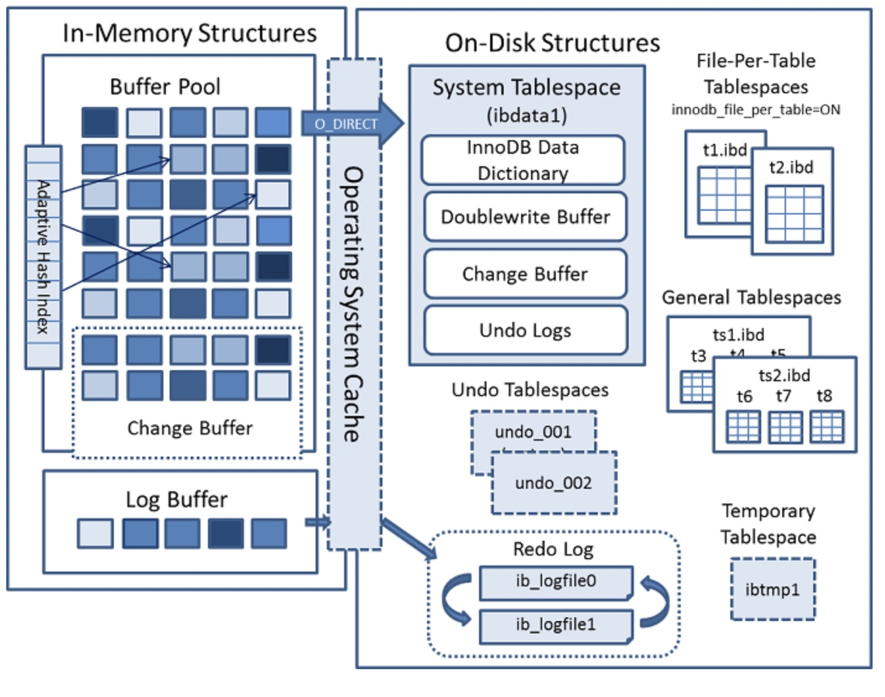

MySQL原理分析之存储引擎
一、存储引擎介绍
x1介绍: 存储引擎负责MySQL中的数据的存储和提取, 是与文件系统打交道, 它是根据MySQL提供的文件访问层抽象接口定制的一种文件访问机制. 使用show engines;命令查看当前数据库支持的引擎信息, 上图所示.2 3支持的类型: 5.5之前默认是MyISAM, 之后默认是InnoDB.4 -> InnoDB: 支持事务, 具有提交, 回滚和崩溃恢复能力, 事务安全.5 -> MyISAM: 不支持事务和外键, 访问速度快.6 -> Memory: 利用内存创建表, 访问速度非常快, 因为数据在内存, 而且默认使用Hash索引, 但是一旦关闭, 数据就会丢失.7 -> Archive: 归档类型引擎, 仅能支持insert和select语句.8 -> CSV: 以CSV文件进行数据存储, 由于文件限制, 所有列必须强制指定not null, 另外CSV引擎也不支持索引和分区, 适合做数据交换的中间表.9 -> BlackHole: 黑洞, 只进不出, 进来消失, 所有插入数据都不会保存.10 -> Federated: 可以访问远端MySQL数据库中的表. 一个本地表, 不保存数据, 访问远程表内容.11 -> MRG_MyISAM: 一组MyISAM表的组合, 这些MyISAM表必须结构相同, Merge表本身没有数据, 对Merge操作可以对一组MyISAM表进行操作.12 13MyISAM与InnoDB功能对比:14-> InnoDB支持事务和外键;MyISAM不支持事务和外键.15-> InnoDB支持行级锁, 基于索引来加锁;MyISAM致辞表级锁.16-> InnoDB使用聚簇索引(索引和文件记录在一起);MyISAM使用非聚簇索引(索引和文件是分开存储).17-> InnoDB读写阻塞与隔离级别有关, 可以采用多版本并发控制(MVCC)来支持高并发;MyISAM使用表锁导致写效率低, 读效率不阻塞.18-> InnoDB表对应两个文件, 一个.frm表结构文件, 一个.ibd数据文件.InnoDB表最大支持64TB;MyISAM表对应三个文件, 一个.frm表结构文件, 一个MYD表数据文件, 一个.MYI索引文件. 从MySQL5.0开始默认限制是256TB.19
20MyISAM与InnoDB使用场景对比: 21-> InnoDB需要事务;MyISAM不需要事务.22-> InnoDB写并发高的场景;MyISAM读并发高写并发低的场景.23-> InnoDB数据一致性要求高;MyISAM数据一致性要求低.24-> InnoDB可以利用硬件内存来作为缓存提高内存利用率减少磁盘IO增加读并发.二、InnoDB存储引擎
InnoDB内存和磁盘存储原理

611介绍: 以上是InnoDB引擎的架构图, 左边是内存结构, 右边是磁盘结构.2
3内存结构: 主要包括Buffer Pool, Change Buffer, Adaptive Hash Index和Log Buffer四大组件.4
5组件1. Buffer Pool: 缓冲池, 简称BP. 以Page页为单位, 默认大小16K, 其底层采用"链表"数据结构管理Page. 在InnoDB访问表记录和索引时会在Page页中缓存, 以少磁盘IO提升效率.6 -> Page管理机制: 将Page状态分为三类Page,并通过三种链表结构来维护和管理这些Page.7 --> free page(空闲page): 未被使用.8 --> clean page(被使用page): 数据没有被修改过.9 --> dirty page(脏页): 被使用page数据被修改过, 页中数据和磁盘的数据产生了不一致.10 --> free list: 表示空闲缓冲区, 管理free page.11 --> flush list: 表示需要刷新到磁盘的缓冲区, 管理dirty page, 内部page按修改时间排序. 脏页即存在于flush链表, 也在LRU链表中, 但是两种互不影响, LRU链表负责管理page的可用性和释放, 而flush链表负责管理脏页的刷盘操作。12 --> lru list: 表示正在使用的缓冲区, 管理clean page和dirty page, 缓冲区以midpoint为基点, 前面链表 称为new列表区, 存放经常访问的数据, 占63%;后面的链表称为old列表区, 存放使用较少数据, 占37%.13 -> Buffer Pool配置参数说明.14 --> show variables like '%innodb_page_size%';查看page页大小[select /1024]16k.15 --> show variables like '%innodb_old%';查看lru list中old列表参数.16 --> show variables like '%innodb_buffer%';查看buffer pool参数.17 -> 建议: 将innodb_buffer_pool_size设置为总内存大小的60%-80%, innodb_buffer_pool_instances可以设置为多个, 这样可以避免缓存争夺(默认128M select /1024/1024;).18 -> 改进型lru算法: lru list采用改进型lru算法.19 --> 普通的lru算法是末尾淘汰法, 新数据从链表头加入, 从末尾淘汰.20 --> 改进型lru算法, 将链表分为new和old两部分, 添加元素从"中间midpoint位置"插入元素, 当数据被访问, page会想new列表头移动, 数据没有被访问会逐步想old末尾移动, 等待被淘汰. 当产生新的page是, 会判断是否存在空闲page, 如果存在将page从free list中移除, 放入到lru list中;不存在就会从lru list中淘汰末尾的page来释放空间.21 22组件2. Change Buffer: 写缓冲区. 在进行DML操作时, 如果Buffer Pool没有其对应的Page数据, 不会立即加载磁盘数据到缓冲池, 首先在Change Buffer记录缓冲变更, 等到数据被读取时, 再将数据合并恢复到Buffer pool中. Change Buffer默认占用Buffer Pool的25%空间(最大允许占50%), 可以根据读写业务量来进行调整对应参数"innodb_change_buffer_max_size".23 -> 写入数据过程: 在更新记录时首先判断BufferPool中是否存在, 如果存在直接在Buffer Pool中修改, 不需要再跟磁盘交互; 如果不存在, 在Change Buffer中进行一次内存操作, 当下次查询记录时, 进行磁盘读取, 然后再从Change Buffer中读取信息并进行合并, 最终放到Buffer Pool中.24 -> 写缓冲区(Change Buffer)仅适用于非唯一普通索引页为什么? 如果在索引设置唯一性, 在进行修改时, InnoDB必须要做唯一性校验, 因此必须查询磁盘, 做一次IO操作. 会直接将记录查询到Buffer Pool中, 然后在缓冲池修改, 不会在Change Buffer操作.25 26组件3. Adaptive Hash Index: 自适应哈希索引, 用于优化对Buffer Pool数据的查询. InnoDB存储引擎会监控对表索引的查找, 如果观察到建立哈希索引可以带来速度的提升, 则建立哈希索引, 所以称之为自适应. InnoDB存储引擎会自动根据访问的频率和模式来为某些页建立哈希索引.27
28组件4. Log Buffer: 日志缓冲区, 用来保存要写入磁盘上log文件(Redo/Undo)的数据, 日志缓冲区的内容定期刷新到磁盘log文件中. 日志缓冲区满时会自动将其刷新到磁盘, 当遇到BLOB或多行更新的大事务操作时, 增加日志缓冲区可以节省磁盘I/O. innodb_log_buffer_size 默认大小为8M. LogBuffer主要是用于记录InnoDB引擎日志, 在DML操作时会产生Redo和Undo日志. 可以通过将innodb_log_buffer_size参数调大, 减少磁盘IO频率.29 -> 参数: innodb_flush_log_at_trx_commit参数控制日志刷新行为, 默认为1.30 --> 0: 每隔1秒写日志文件和刷盘操作(写日志文件LogBuffer到OS cache, 刷盘OScache到磁盘文件)最多丢失1秒数据.31 --> 1: 事务提交, 立刻写日志文件和刷盘, 数据不丢失, 但是会频繁IO操作(默认)方式.32 --> 2: 事务提交, 立刻写日志文件, 每隔1秒钟进行刷盘操作.33 34
35磁盘结构: InnoDB磁盘主要包含Tablespaces, InnoDB Data Dictionary, Doublewrite Buffer, Redo Log和Undo Logs.36
37组件1: Tablespaces: 表空间, 用于存储表结构和数据. 表空间又分为系统表空间;独立表空间;通用表空间;临时表空间;Undo表空间等多种类型.38 -> 系统表空间(The System Tablespace): 包含InnoDB数据字典, Doublewrite Buffer, Change Buffer, Undo Logs的存储区域. 系统表空间也默认包含任何用户在系统表空间创建的表数据和索引数据. 系统表空间是一个共享的表空间因为它是被多个表共享的. 该空间的数据文件通过参数innodb_data_file_path控制, 默认值是ibdata1:12M:autoextend(文件名为ibdata1:12MB:自动扩展);39 -> 独立表空间(File-Per-Table Tablespaces): 默认开启, 独立表空间是一个单表表空间, 该表创建于自己的数据文件中, 而非创建于系统表空间中. 当innodb_file_per_table选项开启时, 表将被创建于独立表空间中. 否则, innodb将被创建于系统表空间中. 每个表文件表空间由一个.ibd数据文件代表, 该文件默认被创建于数据库目录中. 表空间的表文件支持动态(dynamic)和压缩(commpressed)行格式.40 -> 通用表空间(General Tablespaces): 通用表空间为通过create tablespace语法创建的共享表空间. 通用表空间可以创建于mysql数据目录外的其他表空间, 其可以容纳多张表, 且其支持所有的行格式.41 --> CREATE TABLESPACE `ts1` ADD DATAFILE 'ts1.ibd' ENGINE=INNODB; 创建表空间ts142 --> CREATE TABLE t1 (id INT PRIMARY KEY) TABLESPACE ts1; 将表添加到ts1表空间43 -> 临时表空间(Temporary Tablespaces): 分为session temporary tablespaces和global temporary tablespace两种. mysql服务器正常关闭或异常终止时, 临时表空间将被移除, 每次启动时会被重新创建.44 --> session temporary tablespaces: 存储的是用户创建的临时表和磁盘内部的临时表.45 --> global temporary tablespace: 储存用户临时表的回滚段(rollback segments).46 -> 撤销表空间(Undo Tablespaces): 撤销表空间由一个或多个包含Undo日志文件组成. 5.7版本之前Undo占用的是System Tablespace共享区, 5.7之后Undo从System Tablespace分离了出来. undo表空间由innodb_undo_tablespaces配置选项控制(默认为0). 47 -->innodb_undo_tablespaces=0: 表示使用系统表空间ibdata1.48 --> innodb_undo_tablespaces>0: 表示使用undo表空间undo_001;undo_002等.49
50组件2. InnoDB Data Dictionary: 数据字典, 由内部系统表组成, 这些表包含用于查找表;索引和表字段等对象的元数据. 元数据物理上位于InnoDB系统表空间中. 由于历史原因, 数据字典元数据在一定程度上与InnoDB表元数据文件(.frm文件)中存储的信息重叠.51
52组件3. Doublewrite Buffer: 双写缓冲区(默认启用), 位于系统表空间, 是一个存储区域. 在Buffer Pool的page页刷新到磁盘真正的位置前, 会先将数据存在Doublewrite缓冲区. 如果在page页写入过程中出现操作系统|存储子系统或mysqld进程崩溃, InnoDB可以在崩溃恢复期间从Doublewrite 缓冲区中找到页面的备份. 将innodb_doublewrite设置为0禁用双写缓冲区. 53 -> 参数: innodb_flush_method控制着innodb数据文件及redo log的打开刷写模式. 54 --> fdatasync(默认): 先写入操作系统缓存, 然后再调用fsync()函数去异步刷数据文件与redo log的缓存信息 55 --> O_DSYNC: 直接调用fsync()函数.56 --> O_DIRECT: 表示数据文件写入操作会通知操作系统不要缓存数据, 也不要用预读, 直接从InnodbBuffer写到磁盘文件.57 -> 建议: 将innodb_flush_method设置为O_DIRECT. 出现不能修改的配置文件时, 直接在my.ini配置文件中进行修改. 58
59组件4. Redo Log: 重做日志, 是一种基于磁盘的数据结构, 用于在崩溃恢复期间更正不完整事务写入的数据. MySQL以循环方式写入重做日志文件, 记录InnoDB中所有对Buffer Pool修改的日志. 当出现实例故障时, 导致数据未能更新到数据文件, 则数据库重启时须redo, 重新把数据更新到数据文件. 读写事务在执行的过程中, 都会不断的产生redo log. 默认情况下, redo log在磁盘上由两个名为ib_logfile0和ib_logfile1的文件.60
61组件5. Undo Log: 撤消日志, 在事务开始之前保存的被修改数据的备份, 用于例外情况时回滚事务. 撤消日志属于逻辑日志, 根据每行记录进行记录. 撤消日志存在于系统表空间|撤消表空间和临时表空间中.InnoDB版本演变
101MySQL5.7版本2 -> 将Undo日志表空间从共享表空间ibdata文件中分离出来, 可以在安装MySQL时由用户自行指定文件大小和数量.3 -> 增加了temporary临时表空间, 里面存储着临时表或临时查询结果集的数据.4 -> Buffer Pool大小可以动态修改, 无需重启数据库实例.5
6MySQL8.0版本7 -> 将InnoDB表的数据字典和Undo都从共享表空间ibdata中彻底分离出来了, 以前需要ibdata中数据字典与独立表空间ibd文件中数据字典一致才行, 8.0版本就不需要了.8 -> temporary临时表空间也可以配置多个物理文件, 而且均为InnoDB存储引擎并能创建索引, 这样加快了处理的速度. 并且对于session也可以根据线程来存放临时表空间日志. 9 -> 用户可以像Oracle数据库那样设置一些表空间, 每个表空间对应多个物理文件, 每个表空间可以给多个表使用, 但一个表只能存储在一个表空间中. 10 -> 将Doublewrite Buffer从共享表空间ibdata中也分离出来了.InnoDB线程模型
171IOThread: 在InnoDB中使用了大量的AIO(Async IO)来做读写处理, 极大的提高了数据库的性能, 在InnoDB 1.0版本之前有4个IO Thread分别是write;read;insert buffer和log thread, 之后将read thread和write thread分别增大到了4个, 一共有10个.2 -> read thread: 4个thread, 负责读取操作, 将数据从磁盘加载到缓存Page中.3 -> write thread: 4个thread, 负责写操作, 将dirty page刷盘操作.4 --> log thread: 1个threead, 负责将日志缓冲区内容进行刷盘.5 --> insert buffer thread: 1个thread, 负责将写缓冲内容进行刷盘.6 -> Purge Thread: 负责回收在事务提交之后, 不需要的undo日志(此时已经分配给undo page), show variables like '%innodb_purge_threads%'.7 -> Page Cleaner Thread: 作用是将脏数据刷新到磁盘, 对应的redo log被覆盖, 会调用write thread线程处理, show variables like '%innodb_page_cleaners%'.8 -> Master Thread: InnoDB的主线程, 负责调度其他各线程, 优先级最高. 作用是将Buffer Pool中的数据异步刷新到磁盘, 保证数据的一致性. 包含: 脏页的刷新(page cleaner thread);undo页回收(purge thread);redo日志刷新(log thread);合并写缓冲等. 内部有两个主处理, 分别是每隔1秒和10秒处理.9 -> 每1秒执行:10 --> 刷新日志缓冲区, 刷到磁盘.11 --> 合并写缓冲区数据, 根据IO读写压力来决定是否操作.12 --> 刷新脏页数据到磁盘, 根据脏页比例达到75%才操作(innodb_max_dirty_pages_pct, innodb_io_capacity).13 -> 每10秒的操作:14 --> 刷新脏页数据到磁盘.15 --> 合并写缓冲区数据.16 --> 刷新日志缓冲区.17 --> 删除无用的undo页.InnoDB磁盘文件
71InnoDB数据文件结构介绍:2 -> Table Space: 表空间, 存储于ibd数据文件, 用于存储表的记录和索引, 包含很多Segmeng.3 -> Segment: 段, 用于管理多个Extent, 分为数据段(Leaf Node Segment);索引段(Non-leaf Node Segment);回滚段(Rollback Segment), 一个表至少存在2个Segment, 1个管理数据, 1个管理索引, 每多创建1个索引会多2个Segment.4 -> Extent: 区, 一个区固定包含64个连续的页, 大小为1M. 当表空间不足, 需要分配新的Page, 直接分配一个区.5 -> Page: 页, 用于存储行记录, 大小为16K. 包含很多种页类型, 比如数据页, undo页, 系统页, 事务数据页, 大的BLOB对象页.6 --> Page作用: Page是最基本的单位, 都是由Page Header, Page Trailer和Page Body组成.7 -> Row: 行, 包含了记录的字段值, 事务id, 滚动指针(roll pointer), 字段指针(field pointers)等.InnoDB磁盘文件格式
Row Format
121Row格式:2 -> 查看命令: show table status \G;(也可以通过 select * from information_schema.innodb_sys_tables where name='demo/users' \G; name后边是数据库名/表名).3 -> 修改表的row格式命令: alter table table_name row_format=格式类型;4 -> 介绍: 表的行格式决定了它的行是如何物理存储的, 又会影响查询和DML操作的性能. 如果在单个Page页中容纳更多行, 查询和索引效率更高, 缓存池使用内存更少, 写入更新时所需的I/O更少.5 -> 文件格式与行格式关系: 倒推文件格式, 如果row_format为Redundant|Compat文件格式为Antelope;如果row_format为Dynamic和Compressed文件格式为Barracuda.6 -> 溢出页: 每个表的数据会分成若干Page来存储, 每个Page中都采用B Tree结构存储, 如果字段信息过长, 无法存储在B Tree节点中, 需要单独给该字段分配空间, 此时当前的Page称之为溢出页, 该字段称为页外列.7 -> Row格式分为四类:Redundant格式;Compat格式;Dynamic格式;Compressed格式.8 --> Redundant格式: 使用Redundant行格式, 表会将变长列值的前768字节存储在B树节点的索引记录中, 其余的存储在溢出页上. 对于大于等于786字节的固定长度字段InnoDB会转换为变长字段, 以便能够在页外存储.9 --> Compat格式: 与Redundant比较, Compat格式减少约20%的行存储空间, 但是增加了某些操作的CPU使用量. 如果系统负载是受缓存命中率和磁盘速度限制, 那么Compact格式可能更快. 如果系统负载受到CPU速度的限制, 那么Compact格式可能会慢一些.10 --> Dynamic格式: 使用Dynamic格式, InnoDB会将表中可变长度的列值完全存储在页外, 而索引记录只包含指向溢出页的20字节指针. 大于或等于768字节的固定长度字段编码为可变长度字段. Dynamic行格式支持大索引前缀, 最多可以为3072字节, 可通过innodb_large_prefix参数控制.11 --> Compressed格式: Compressed格式提供与Dynamic格式相同的存储特性和功能, 但增加了对表和索引数据压缩的支持.12 -> 新格式特性: Dynamic和Compressed新格式引入的功能有, 数据压缩;增强型长列数据的页外存储和大索引前缀. Undo Log
141Undo Log2 -> 介绍: InnoDB独有的Log, 数据库事务开始之前, 会将需要修改"老记录"数据备份到Undo日志中, 当事务回滚时或者数据库崩溃时, 可以利用Undo日志撤销未提交事务对数据库产生的影响.3 -> 产生与销毁: Undo Log在事务开始前产生, 事务在提交后不会立刻删除Undo Log, InnoDB会将该事务对应的Undo Log放入到删除列表中, 后面会通过后台线程purge thread进行回收处理. 4 -> 本质: Undo Log属于逻辑日志, 记录一个变化过程. 例如执行一个delete, Undo Log会记录一个Insert; 执行一个Update，Undo Log会记录一个相反的Update.5 -> 存储: Undo Log采用Segment的方式管理和记录. 在InnoDB数据文件中包含一种回滚段(Rollback Segment), 内部包含1024个Undo Log Segment. 通过命令show variables like '%innodb_undo%';查看. 6 -> 作用: 实现事务原子性;实现多版本并发控制(MVCC).7 --> 实现事务原子性: Undo Log实现事务原子性, 事务处理过程中, 如果出现了错误或者用户执行了rollback语句, MySQL可以利用Undo Log 中的备份将数据恢复到事务开始之前的状态.8 --> 实现多版本并发控制: Undo Log实现多版本并发控制. 事务未提交之前, Undo Log保存了未提交之前的版本数据, Undo Log中的数据可作为数据旧版本快照供其他并发事务进行快照读.9 -> 持久化策略参数: 设置参数"Innodb_flush_log_at_trx_commit"来调整持久化方式.10 --> 0: 每秒提交Undo buffer==>OS cache==>flush cache to disk, 可能丢失一秒内的事务数据.由后台Master线程每隔1秒执行一次操作.11 --> 1: (默认值), 每次事务提交执行Undo Buffer==>OS cache==>flush cache to disk, 最安全, 性能最差的方式.12 --> 2: 每次事务提交执行Undo Buffer==>OS cache, 然后由后台Master线程再每隔1秒执行OS cache==>flush cache to disk的操作.13 --> 建议: 一般建议选择取值2, 因为MySQL挂了数据没有损失, 整个服务器挂了才会损失1秒的事务提交数据. 14 -> 刷盘超时参数: innodb_flush_log_at_timeout. Redo Log

101Redo Log2 -> 介绍: InnoDB独有的Log, 指事务中修改的任何数据, 将"最新的"数据备份存储的位置(Redo Log), 被称为重做日志.3 -> 产生与销毁: 随着事务的执行产生Redo Log, 事务提交时产生薪的Redo Log写入Log Buffer. 到事务操作的dirty page刷盘后Redo Log任务完成, 新的的Redo Log会覆盖老的Redo Log.4 -> 作用: Redo Log主要是为了实现事务的"持久性", 防止在故障点dirty page没有刷盘, 在重启MySQL时, Redo Log会重做, 来实现未刷盘的数据.5 -> 写入机制: Redo Log文件内容是以顺序的方式写入文件, 写满时在从第一个文件进行覆盖的写. 6 --> WritePos: 是当前记录的位置, 一边写一边后移, 写到最后一个文件末尾后就回到0号文件开头.7 --> CheckPoint: 是当前要擦除的位置, 也是往后推移并且循环的, 擦除记录前要把记录更新到数据文件.8 --> WritePos与CheckPoint之间空闲部分: 可以用来记录新的操作. 如果WritePos追上CheckPoint, 表示写满, 这时候不能再执行新的更新, 得停下来先擦掉一些记录, 把CheckPoint推进一下.9 -> 文件存储参数: 每个InnoDB存储引擎至少有1个Redo Log Group, 每个文件至少有2个Redo Log文件, 默认为ib_logfile0何ib_logfile1.通过命令show variables like '%innodb_log%';查看相关参数.10 -> 持久化策略参数: 与Undolog一致.BinLog
491BinLog2 -> 介绍: MySQL Server的Log, BinaryLog, 记录所有数据库表结构变更以及表数据修改的二进制日志, BinLog是以事件的形式记录包含语句执行时长.3 -> 应用场景: 主从复制;数据恢复.4 --> 主从复制: 在主库中开启Binlog功能, 这样主库就可以把Binlog传递给从库, 从库拿到Binlog后实现数据恢复达到主从数据一致性.5 --> 数据恢复: 通过MySQLBinLog工具来恢复数据.6 -> 命名规范: "主机名_binlog-序列号", 例如"oak_binlog-000001".7 -> 记录模式: 有三种模式, STATEMENT;ROW;MIXED.8 --> ROW(row-based replication, RBR): 日志中会记录每一行数据被修改的情况, 然后在Slave端对相同的数据进行修改.9 ---> 优点: 能清楚记录每一个行数据的修改细节, 能完全实现主从数据同步和数据的恢复.10 ---> 缺点: 批量操作, 会产生大量的日志, 尤其是alter table会让日志暴涨.11 --> STATMENT(statement-based replication, SBR): 每一条被修改数据的SQL都会记录到Master的BinLog中, Slave在复制的时候SQL进程会解析成和原来Master端执行过的相同的SQL再次执行, 称为SQL语句复制.12 ---> 优点: 日志量小, 减少磁盘IO, 提升存储和恢复速度.13 ---> 缺点: 在某些情况下会导致主从数据不一致, 比如last_insert_id();now()等函数.14 --> MIXED(mixed-based replication, MBR): 以上两种模式的混合使用, 一般会使用STATEMENT模式保存binlog, 对于STATEMENT模式无法复制的操作使用ROW模式保存binlog, MySQL会根据执行的SQL语句选择写入模式.15 -> 文件结构: BinLog文件中记录的是对数据库的各种修改操作, 用Log Event来存储. 不同的修改操作对应的不同的Log Event比较常用的Log Event有: Query Event;Row Event;Xid Event等. BinLog文件的内容就是各种Log Event的集合.16 -> 写入机制: 根据记录模式和操作触发Event事件生成Log Event(事件触发执行机制).17 --> 在事务执行过程中产生的Log Event写入事务的缓冲区, 每个事务线程都有缓冲区, 在缓冲区的binlog_cache_mngr数据结构中有两个缓冲区, 一个是stmt_cache用于存放不支持事务的信息;另一个是trx_cache用于存放支持事务的信息. 18 --> 在事务提交阶段将Log Event写入到binlog文件中. 19 --> 注意: 不同事务以串行方式将Log Event写入binlog文件中, 所以一个事务包含的Log Event信息在binlog文件中是连续的, 中间不会插入其他事务的Log Event.20 -> 文件操作命令: 21 --> 查看Binlog状态: show variables like 'log_bin';22 --> 开启Binlog功能: 需要修改my.cnf或my.ini配置文件(/etc/my.cnf), 重启MySQL服务.23 #添加这一行就ok 24 log-bin=mysql-bin25 ##选择row模式26 binlog-format=ROW27 ##配置mysql replaction需要定义，不能和canal的slaveId重复 28 server_id=129 --> 查看Log Event:30 show binary logs; //等价于show master logs;31 show master status;32 show binlog events;33 show binlog events in 'mysqlbinlog.000001';34 --> 查看sql: mysqlbinlog "文件名" > "test.sql"; 35 --> 恢复数据:36 ---> 按指定时间恢复: mysqlbinlog --start-datetime="2020-04-25 18:00:00" --stop-datetime="2020-04-26 00:00:00" mysqlbinlog.000002 | mysql -uroot -p123437 ---> 按事件位置号恢复: mysqlbinlog --start-position=154 --stop-position=957 mysqlbinlog.000002 | mysql -uroot -p123438 --> mysqldump: 定期全部备份数据库数据. mysqlbinlog可以做增量备份和恢复操作.39 --> 注意: 这个命令是在退出mysql客户端找到binlog所在的目录执行的命令, 可以通过/etc/my.conf查看binlog所在的目录, 一般在/var/lib/mysql这个地方存储.40 --> 删除Binlog文件: 可以通过设置expire_logs_days参数来启动自动清理功能. 默认值为0表示没启用. 设置为1表示超出1天binlog文件会自动删除掉.41 ---> 删除指定文件: purge binary logs to 'mysqlbinlog.000001';42 ---> 删除指定时间之前的文件: purge binary logs before '2020-04-28 00:00:00';43 ---> 清除所有文件: reset master;44
45RedoLog与BinLog对比:46 -> Redo Log属于InnoDB引擎功能;Binlog属于MySQL Server自带功能, 并且是以二进制文件记录.47 -> Redo Log属于物理日志, 记录该数据页更新状态内容;Binlog是逻辑日志, 记录更新过程.48 -> Redo Log日志是循环写, 日志空间大小是固定;Binlog是追加写入, 写完一个写下一个, 不会覆盖使用.49 -> Redo Log作为服务器异常宕机后事务数据自动恢复使用;Binlog可以作为主从复制和数据恢复使用, Binlog没有自动crash-safe能力.